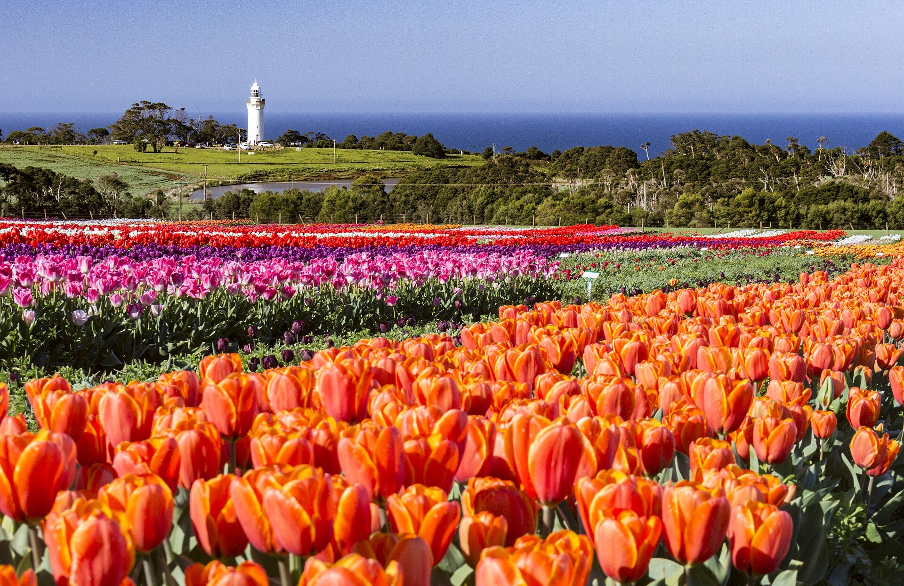
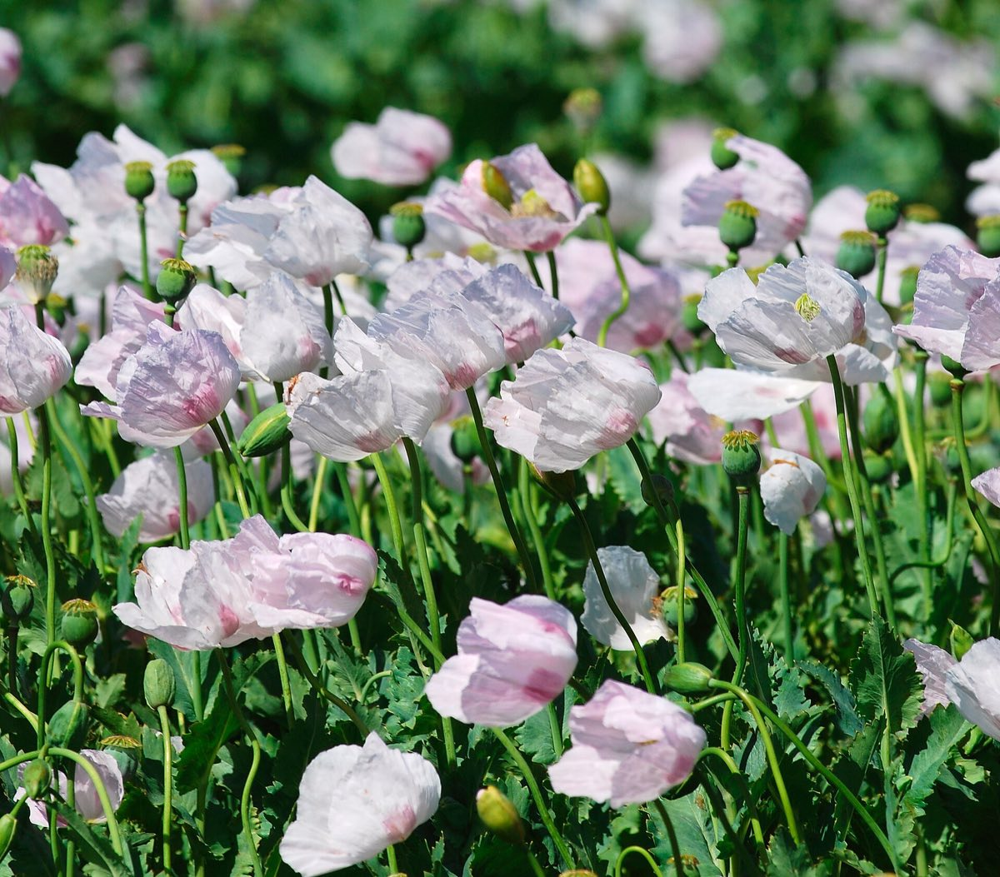
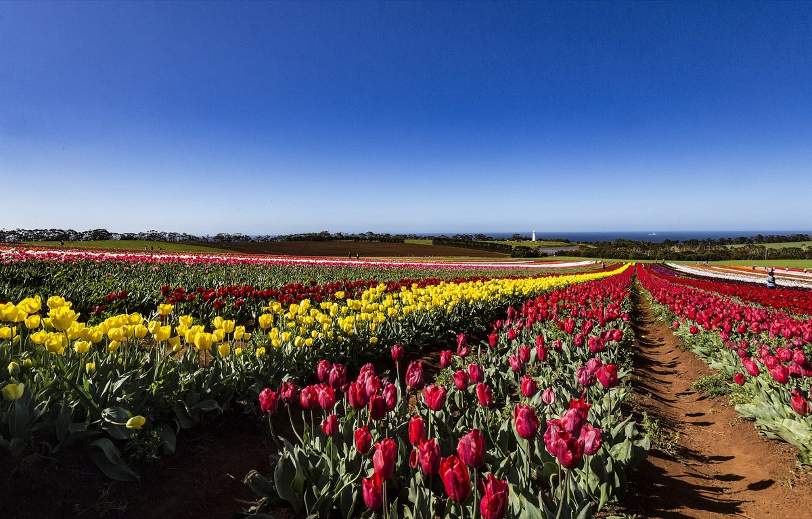
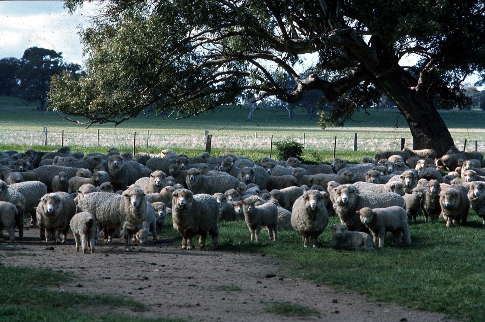
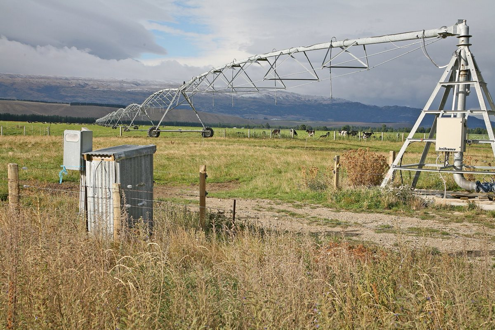
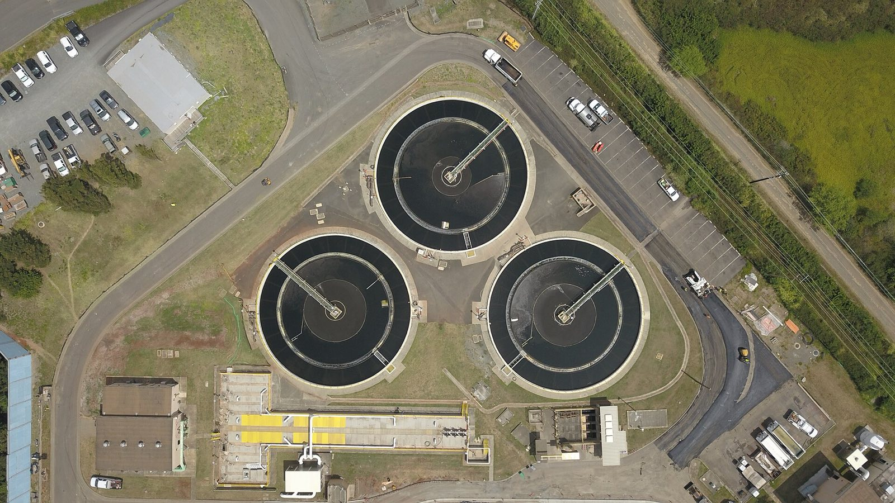
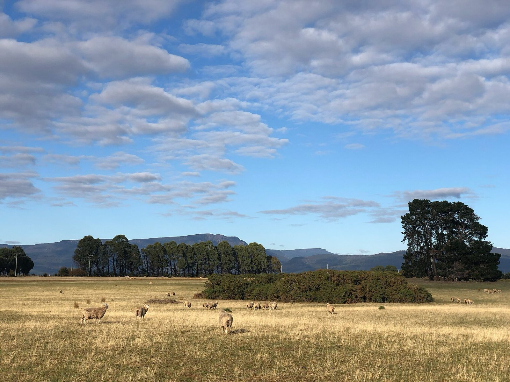

Centre pivots & irrigation
Pivots, travelling irrigators and solid-set — pump feed, electrics, filtration, and pressure at the end tower when it counts.

Water engineering · Tasmania
Irrigation, pumps, filtration and treatment for Tasmanian farms and infrastructure. Thirty-odd years in water — mines, councils, major city utilities — and you deal with the engineer, not a call centre.
What Tassie grows
Poppies in the Midlands, tulips and veg on the North West red soils, fine wool on the dry country. When the pivot stops or the filter blocks in the middle of a dry January, the whole season’s on the line. That’s the work.




Services
Design, installation support, fault-finding and commissioning — explained in plain English, with fixed quotes wherever the job allows.
Pivots, travelling irrigators and solid-set — pump feed, electrics, filtration, and pressure at the end tower when it counts.
Duty selection, suction design that doesn’t cavitate, VFDs and seals — sized to your head and flow, not a catalogue guess.
Screen, media and disc filtration to keep grit, algae and sand out of nozzles and drippers — so you’re not unblocking lines at 5am.
Bores, tanks, rainwater and solar pumping for blocks and shacks. Ten years living off-grid on solar — I know what fails in a Tassie winter.
Clarifiers, thickeners, dosing and treatment-plant mechanical for water, wastewater and mine water — the heavy stuff.
Bidding Tasmanian water or hydro work and need a mechanical/water lead? I read the drawings, the spec and the contract.

Infrastructure
Tasmania’s water and power run on TasWater, Hydro Tasmania and the contractors who build for them. I’ve delivered this work at scale for Sydney Water, Urban Utilities, Seqwater, Thiess and John Holland.
Head contractors: if you need a mechanical/water lead on a Tassie bid, get in touch early.
Service area
From the North West Coast to the Huon, the Midlands to the East Coast. Text is fine — I’m often in a paddock or a pump shed.


Who turns up
Thirty-odd years in mechanical and water engineering — remote islands, mine sites, council shutdowns, and a leaking tunnel sixty metres under the Brisbane River. Zero OH&S incidents career-wide.
I grew Meyjor Industries (2012–2023) from a small shop into a serious delivery business. Engineered Water Solutions carries that on — same engineer, same standards, now based in Tasmania.
“I read the contract so you don’t have to.”
Bachelor of Business (QUT) · Bachelor of Arts in Economics (UQ) · Master of Business Communication (UoW) · near-complete Juris Doctor, Commercial Law (ANU).
Track record with major utilities and contractors.
Selected projects
A few from the mainland track record, locations labelled. See all projects →

QLD · Lake Vermont
Upgraded the plant to meet its environmental licence while beating mechanical targets — and ended an ongoing operational headache.

QLD · Brisbane
Engineering and estimates to refurbish two pipes under the Brisbane River without a shutdown that would have crippled the network.

QLD · Mackay region
Chemical dosing and SCADA/PLC upgrades across nine outlying regions, plus a high-filtration package for irrigation reuse.
How it works
0475 212 468. Tell me what’s broken or what you’re planning. A photo of the pump or filter helps.
I come out and look. Any call-out cost is agreed upfront, before anything is committed.
Clear scope, clear price. No surprise extras buried in the fine print.
Contact
You’ll get Mitchell, not a switchboard. If I’m on a job I’ll ring you back the same day.
0475 212 46885 Murray Street, Hobart TAS 7000
63 St John Street, Launceston TAS 7250
PO Box 76, Kings Meadows TAS 7249